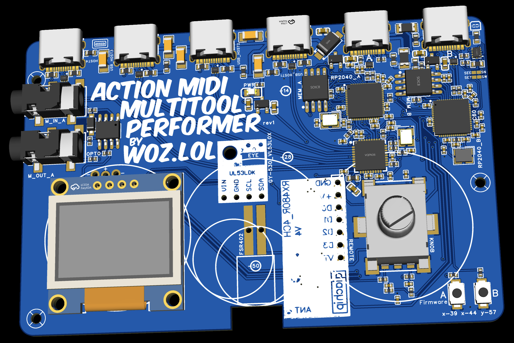
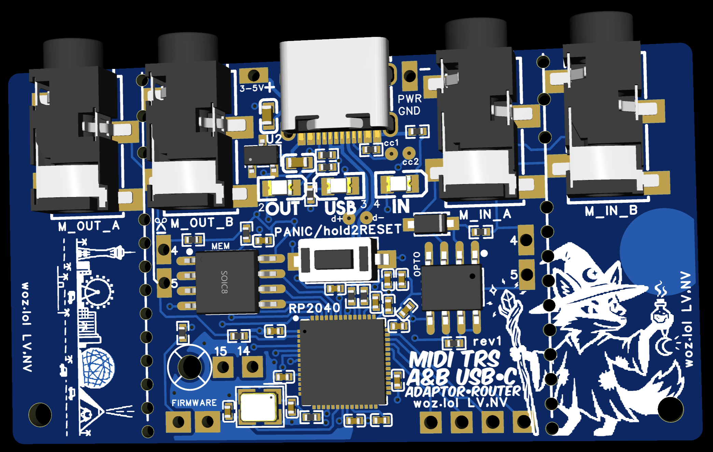
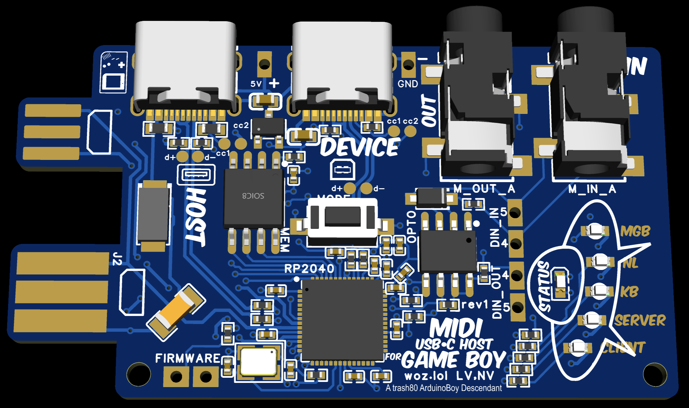
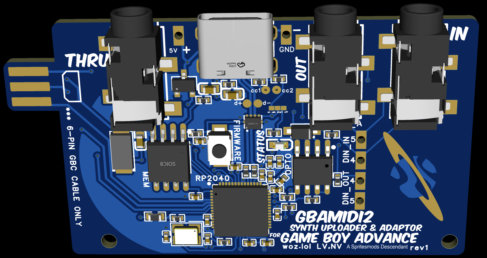
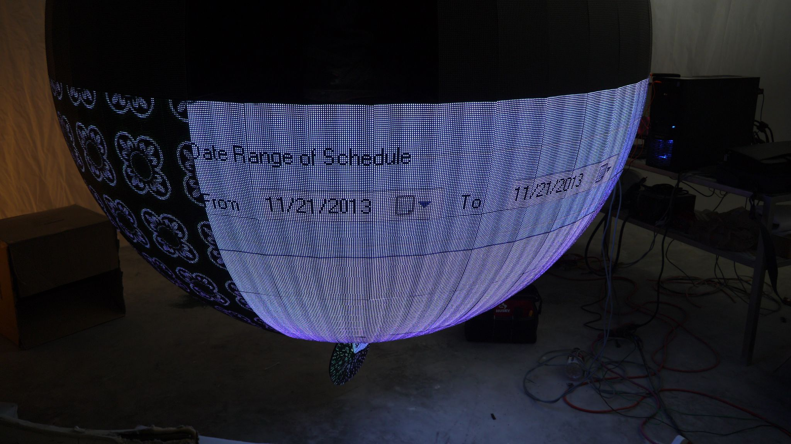

Action Performer MIDI Multitool
MIDI performance hardware
Woz / Las Vegas
PCB design, LED displays, MIDI hardware, and sensor-driven installations.
View projectsWoz builds electronics for art and live environments in Las Vegas. His work includes custom PCBs, LED control systems, MIDI hardware, and interactive exhibits.
This portfolio brings together projects from woz.lol and wozled.com.
Open woz.lol Las Vegas
Las VegasProduct boards, lighting boards, test hardware, and a client LED-screen controller.

MIDI performance hardware

TRS and USB-C MIDI routing

USB-C MIDI interface

Game Boy Advance MIDI adapter
Photos needed for these boards.
Security system electronics
Addressable RGB lighting control
LED bar electronics
LED testing hardware
Photo needed.
PCB / 05
Custom electronics for a freestanding LED screen installation.
Selected installations from wozLED, including Adore Miami and Caesars Palace Las Vegas.
Open wozLED gallery
Round LED display installation.

Custom-shaped LED cube sculpture.

Transparent display for the Bellagio TEAMS Expo.
Projects that combine electronics with performance, sound, and public space.
01 / Magician projects
Custom devices and mechanisms for posted magician projects.
02 / Lumin & Forge museum exhibit
Ultrasonic distance sensors trigger audio files when visitors walk under the exhibit.
03 / Custom MIDI controller
A MIDI controller keyboard customized for a music producer’s workflow.